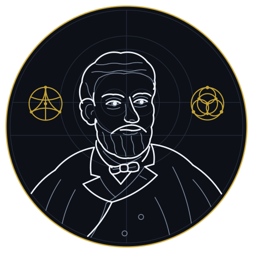

Henri Poincaré¶

Henri Poincaré (1854–1912) reshaped the philosophy of geometry at the turn of the twentieth century by showing that geometric axioms are neither a priori necessities nor empirical facts, but free conventions guided by experience—and by translating Lobachevskian non-Euclidean space directly into Euclidean circles orthogonal to a unit disk. This synchronized four-track French–English edition pairs the 1902 Flammarion text of La Science et l’Hypothèse with the 1905 English translations, interactive conformal disk diagrams, and exact symbolic proofs.
Books in This Collection¶
Primary Edition · 1902 / 1905 · Parts I & II (Chs. I–V) · 4 Tracks
Science and Hypothesis (La Science et l’Hypothèse) — Poincaré’s foundational treatise on mathematical induction (raisonnement par récurrence), the physical versus mathematical continuum, the Non-Euclidean Translation Dictionary, the heated-disk model, continuous transformation groups, and geometric conventionalism across 8 calibrated vector figures.
Key Features¶
Synchronized 1902 French & 1905 English
Every chapter aligns the 1902 Ernest Flammarion French text (including Les Géométries de Hilbert) with W. J. Greenstreet’s 1905 translation, structural summaries, and mathematical notes.
Exact Conformal Disk & Rational Hyperbolic Proofs
The Symbolic Demos implement exact horizon inversion and orthogonal geodesic circles in geometor.poincare.disk over \(\mathbb{Q}\) and quadratic extensions with zero floating-point approximations.
Translation Dictionary & Cross-Corpus Concordance
Explore Poincaré’s Euclidean–Lobachevskian dictionary and 12 cross-corpus loci linking Euclid, Hilbert, Russell, Hoenen, Klein, Pappus, and Wildberger in the Concordance.
Reference & Project¶
Scholarly Apparatus
Translation Dictionary & Concordance — Lobachevskian–Euclidean dictionary and cross-corpus matrix
People & Bibliography — 28 biographical profiles and primary/secondary editions
Glossary — French, German, Latin, and English terminology
About This Project
About — Scope, textual witnesses, and Poincaré’s place in GEOMETOR
Using This Edition & Symbolic Demos — Navigation guide and SymPy hyperbolic disk models
Log, Changelog, & Modules — Development notes, release history, and Python API